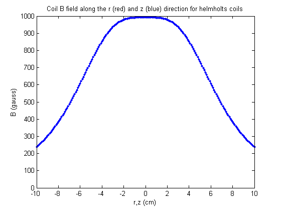

clear %-------------------------------------------------------------------------- %Magnetic trap calculation % B field of an antihelmholtz coil % BrzAH(r, z0, I, a, coil, Z) % r is the starting (smaller) radius of the coil loop given in cm % z0 is the location of the center of the loop in cm % I is current in A % a is the cross section %coil is an array specifying the geometry of the coil baised on number of %turns in each layer. %Z specifies the rectangular volum in which the B-field in going to be %calculated. The filed is calculated along the z and y axis. By symmetry %B_y=B_x. %-------------------------------------------------------------------------- %------------------- constants -------------------------------------------- cm = 1; inch = 2.54 * cm; %------------------- coil parameters -------------------------------------- a = 0.35+ 0.01*inch; %coil dimension in + extra spacing for epoxy etc(cm) I =410; %current through coils (A) coil = [4,4,4,4]; %coil configuration. from inner set to outer %center of chamber is at 3.47'' %Bucket depth 2.99" %3.47-2.99=0.48" is the distance of the chamber center from bucket lower %surface. We also assume that the metal disk around the window is not %thiner than 0.118"=0.2997 cm. z = 0.48*inch + 1. + a*coil(1)/2; %Center of mass height for coil (cm) r = 2*z-length(coil)*a/2 + a/2; %Inner coil radius (cm) z0=z - a*coil(1)/2+a/2; %First coil height fprintf('\r\t coil separation = %0.4f inch\r\tcoil inner diameter = %0.4f inch\r',(z0*2-a)/inch,2*(r-a/2)/inch); coil_outer_radius = (r + a*length(coil)-a/2)/inch; coil_height = a*coil(1)/inch; fprintf('\r\tcoil outer diameter= %0.5f inch\r\tcoil_height = %0.5f inch\r',coil_outer_radius*2,coil_height); Z = [-10, 10]; %region of interest to calculate B-field %-------------------------------------------------------------------------- z = Z(1):0.1:Z(2); N = length(z); N2 = round(N/2); Bz_u = zeros(N,3); Bz_d = zeros(N,3); By_u = zeros(N,3); By_d = zeros(N,3); NN = length(coil); R = 0; %last coil radius to be calculated drz = a; for k=1:NN rk = r + (k-1)*drz; for j=1:coil(k) zj = z0 + (j-1)*drz; R=R+2*pi*rk; %calculating total coil length for i=1:N Bz_u(i,:) = Bz_u(i,:) + B_loopN([0 0 z(i)], zj, rk, I); By_u(i,:) = By_u(i,:) + B_loopN([0 z(i) 0], zj, rk, I); Bz_d(i,:) = Bz_d(i,:) + B_loopN([0 0 z(i)], -zj, rk, I); By_d(i,:) = By_d(i,:) + B_loopN([0 z(i) 0], -zj, rk, I); end end end fprintf('\rcoil length = %0.4f cm\r\t\t',R); Bz = abs( Bz_u(N2:N,3) + Bz_d(N2:N,3) ); %total B-field in the z- direction By = abs( By_u(N2:N,2) + By_d(N2:N,2) ); %total B-field in the x and y directions Gz = mean( gradient(Bz,1) ); % average gradient in Z direction Gr = mean( gradient(By,1) ); % average gradient in X,Y directions % % Plots B as function of z and y (plane) % plot( z(:), ( Bz_u(:,3) + Bz_d(:,3) ), '.-b', z(:), ( By_u(:,2) + By_d(:,2) ), '-r') ylabel('B (gauss)'); xlabel('r,z (cm)'); title('Coil B field along the r (red) and z (blue) direction for helmholts coils'); %-------------------------- power requierments ---------------------------- id=inch/16; % square inner size of the copper tube for the 1/8" tube a_conducting=inch/8; % Conducting part of the wire r0 = 1.7e-6; % copper wire resistance at room temperature (ohms*cm) Lc = 2*R+400/12+1600/12; % coils full length (winding + water circuit connections) R0 = r0*Lc/(a_conducting^2-id^2); % coils total resistance V0 = R0*I; % voltage drop per coil P0 = R0*I^2; % voltage drop on the coils at room temperature Vigbt=5; Vlds=1; Vxtra=.4; % extra voltage drops in the system Vt = V0 + Vigbt + Vlds + Vxtra; % total voltage drop in the system Pt = Vt*I; % total power to be dissipated (T corrected) % fprintf('\rRc = %0.4f ohms\r\t\tVt = %0.1f V\r\t\tPc = %1.3f kW\r',R0,Vt,Pt/1000); %
coil separation = 1.7474 inch coil inner diameter = 4.0860 inch coil outer diameter= 5.26835 inch coil_height = 0.59118 inch coil length = 597.1539 cm Rc = 0.0306 ohms Vt = 18.9 V Pc = 7.768 kW